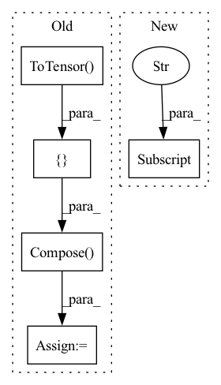

Pattern ID :35421
Before Change
def show_misclassified(misclassified_dictionary, is_dicom = True, num_of_images = 16, figure_size = (5,5)):
row = int(math.sqrt(num_of_images))
sample = random.sample(list(misclassified_dictionary), num_of_images)
transform= transforms.Compose([ transforms.Resize((244, 244)),transforms.ToTensor() ])
if is_dicom:
imgs = [torch.from_numpy(dicom_to_narray(i)) for i in sample]
else:
imgs = [transform(Image.open(i).convert("RGB")) for i in sample]After Change
imgs = [torch.from_numpy(dicom_to_narray(i)) for i in sample]
else:
imgs = [transforms(Image.open(i).convert("RGB")) for i in sample]
titles = [(str(i["true_label"]),",", str(i["predicted_label"]),",", str(i["accuarcy"] )+"%") for i in sample]
// grid = torchvision.utils.make_grid(imgs, nrow=row)
// plt.figure(figsize=(figure_size))
// plt.imshow(np.transpose(grid, (1,2,0)))In pattern: SUPERPATTERN
Frequency: 3
Non-data size: 5
Instances Fragment ID: 100623003
Project Name: radtorch/radtorch
Commit Name: 3834eba24d28be2da3399132117d6be36eb143d7
Time: 2020-03-27
Author: elbanan@users.noreply.github.com
File Name: radtorch/visutils.py
M Class Name: AnonimousClass
N Class Name: AnonimousClass
M Method Name: show_misclassified(5)
N Method Name: show_misclassified(4)
M Parent Class:
N Parent Class:
M File Name: radtorch/visutils.py
N File Name: radtorch/visutils.py
M Start Line: 44
M End Line: 51
N Start Line: 78
N End Line: 90
Before Change
torch.manual_seed(7) // for reproductibility
//
transform = torchvision.transforms.Compose(
[ torchvision.transforms.functional.to_grayscale,
torchvision.transforms.RandomCrop(
size=(img_size, img_size), pad_if_needed=True, padding_mode="edge"),
torchvision.transforms.ToTensor() ,
torchvision.transforms.Normalize([0.5], [0.5]))
testset = \
torchvision.datasets.ImageFolder(root=data_root, transform=transform)
testloader = torch.utils.data.DataLoader(testset, batch_size=batch_size, shuffle=False)After Change
// Walsh ordered transforms
time_start = time.perf_counter()
stat_walsh(dataloaders["train"] , device, stat_root, n_loop)
time_elapsed = (time.perf_counter() - time_start)
print(f"Computed in {time_elapsed} seconds") Fragment ID: 100622990
Project Name: openspyrit/spyrit
Commit Name: e7bbc4532d2c724d25c7f87a00096719fc9c56cd
Time: 2022-09-06
Author: nicolas.ducros@insa-lyon.fr
File Name: spyrit/misc/statistics.py
M Class Name: AnonimousClass
N Class Name: AnonimousClass
M Method Name: stat_walsh_ImageNet(6)
N Method Name: stat_walsh_ImageNet(6)
M Parent Class:
N Parent Class:
M File Name: spyrit/misc/statistics.py
N File Name: spyrit/misc/statistics.py
M Start Line: 466
M End Line: 489
N Start Line: 24
N End Line: 32
Before Change
// from libs.FastAutoAugment.data import Augmentation
// from libs.FastAutoAugment.archive import fa_resnet50_rimagenet
train_loader = torch.utils.data.DataLoader(
my_dataloader(input_data[0],transforms.Compose([
TrainDataAug(img_size, img_size),
//ImageNetPolicy(), //autoaug
//Augmentation(fa_resnet50_rimagenet()), //fastaa
transforms.ToTensor() ,
my_normalize) ),
batch_size=batch_size, shuffle=True, **kwargs)
val_loader = torch.utils.data.DataLoader(After Change
train_loader = torch.utils.data.DataLoader(
my_dataloader(input_data[0],
cfg["label_type"] ,
label_path,
transforms.Compose([
TrainDataAug(cfg["img_size"]), Fragment ID: 100623002
Project Name: fire717/fireclassification
Commit Name: 4628b872d596723f152ee50023b336a44d59c320
Time: 2020-11-26
Author: yi.wei@imprexion.com.cn
File Name: fire/datatools.py
M Class Name: AnonimousClass
N Class Name: AnonimousClass
M Method Name: getDataLoader(3)
N Method Name: getDataLoader(6)
M Parent Class:
N Parent Class:
M File Name: fire/datatools.py
N File Name: fire/datatools.py
M Start Line: 167
M End Line: 277
N Start Line: 209
N End Line: 286